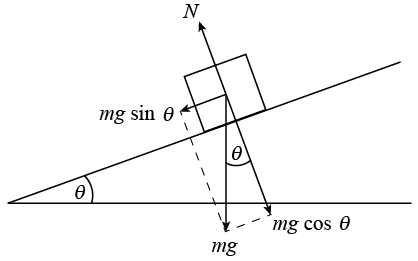
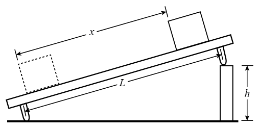

Acceleration of Gravity
Introduction
An object in free fall has a downward acceleration of magnitude, g, whereg = 9.80 m/s2.
The acceleration is produced by the gravitational force that the earth exerts on the object. Applying Newton's second law to an object in free fall gives W = mg,
an equation that relates the mass and weight of an object.
Figure 1 gives the free-body force diagram for an object sliding down a frictionless incline that is at an angle, θ, above the horizontal. N is the normal force exerted on the object by the surface of the incline and mg is the gravity force exerted on the object by the Earth, the weight of the object. The normal force is perpendicular to the surface of the incline and the gravity force is vertically downward, toward the center of the Earth. Since the acceleration of the object is parallel to the incline, it is convenient to take our x and y coordinate axes to be parallel and perpendicular to the surface of the incline. If the x-axis is directed down the incline, then the acceleration of the object is in the +x-direction and ax = a.
The components of the gravity force along the coordinate directions are shown in Figure 1.

Figure 1: Free-body force diagram for an object sliding down a frictionless incline
| Fx | |
 | |
mg sin θ = ma and a = g sin θ.
The object slides down the incline with constant acceleration, g sin θ.
If the object starts from rest and travels a distance, x, down the incline in time, t, one of the constant acceleration kinematic equations gives that x =
at2.
With | 1 |
| 2 |
a = g sin θ,
this becomes
The motion is like free fall, but with a reduced value of the acceleration. The reduced acceleration means longer time intervals for a given distance. This allows for a more accurate measurement of g than we could easily get for free fall motion.
Objective
In this experiment, we measure the time it takes a cart to travel a distance down a frictionless incline and use this to determine the acceleration of gravity, g. The measured value of g will be compared to the accepted value ofg = 9.80 m/s2.
Apparatus
- PASCO track and cart
- Stopwatch
Discussion
The Introduction for this experiment shows that for an object moving down an incline that is inclined at an angle, θ, with respect to the horizontal, the time, t, it takes the object to move a distance, x, along the incline is given by the equationx =
(g sin θ)t2.
The experimental setup is sketched in Figure 2. The figure shows that | 1 |
| 2 |
sin θ =
.
This gives | h |
| L |
x =
g
t2.
Solving for g, we get
| 1 |
| 2 |
| h |
| L |

Figure 2: Experimental setup

Procedure
Please print the worksheet for this lab. You will need this sheet to record your data.
Caution:
Be careful not to scratch the surface of the track or drop anything on it! When not using the cart, place it on the lab table with the wheels up.
Be careful not to scratch the surface of the track or drop anything on it! When not using the cart, place it on the lab table with the wheels up.
1
Refer to Figure 2. The distance, x, traveled by the cart will be determined by two pencil marks on the track that serve as starting and finishing lines for the front end of the cart. Measure and record the distance, x, between the two pencil marks that are on the track.
The distance, L, between the track supports has been measured and is written on the side of the track. Record the value of L.
2
Place the cart in the middle of the track and see if it rolls to either end to check if the track is level (in the absence of any spacer). If necessary, adjust the screw underneath one end of the track to make sure it is level. Also make sure that the car runs smoothly on the track. (Notify your TA in case it does not.)
3
It is possible to elevate the track by placing a metal block (spacer) underneath the adjustment screw. A 1-cm spacer and a 2-cm spacer are provided. Therefore, the track can be elevated to heights of 1, 2 and 3 cm. This is the value of h.
Use the 1-cm spacer first. Place the cart on the track so its front end is aligned with the higher of the two pencil marks that define x. Carefully release the cart from rest and simultaneously start the stopwatch. Stop the stopwatch when the front end of the cart reaches the lower pencil mark and record the time, t1, in Table 1. Repeat this procedure three more times, once with the same person using the stopwatch and then twice with the other lab partner making the time measurement. Record your results as t1, t2, t3, and t4 in Table 1.
4
Repeat Step 3 for heights (values of h) of 2 cm and 3 cm. Record the four time measurements for each h in Table 1.
5
Calculate the average value of t for each h and enter your results into Table 1. Then use the equation g =
to calculate g for each h and enter into Table 1.
| 2Lx |
| ht2 |
6
The percent uncertainty in each of the quantities x, L, and h is small. Therefore, the uncertainty in your measured value of g is determined mainly by the error in measuring t and Δg = g
.
Take Δt to be the standard deviation in your measurement of t, so that
 |
| 2Δt |
| t |
 |
Use your data in Table 1 to calculate Δt for each h and enter your results into Table 2. For each h, calculate the percent uncertainty in your measured value of g as
and enter your results into Table 2.
7
For each h calculate the percent error in your measured value of g as compared to the accepted value of 9.80 m/s2. Use the equation
where g is your value in Table 1. Enter your results into the last column of Table 2. For each h compare the % uncertainty in Table 2 to the % error. Is your % error smaller than the % uncertainty? Does one value of h give more accurate results for g?